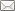
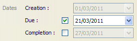
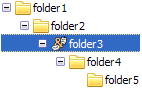
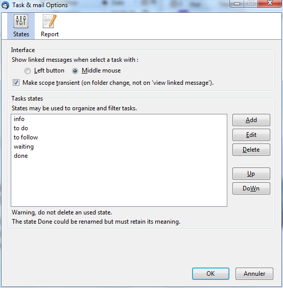

Tasks & Mail - User Manual2.3.1 - March 24 2012
General description
This extension allows you to manage tasks with the possibility of linking these tasks to messages. This extension works with Thunderbird 11.0.
Restrictions
The tasks are locally stored on your computer (not on a remote server or Google).The tasks can not be shared between many devices or many people.Tasks managed with Tasks & Mails are not in connection with Lightning.
The extension is designed to work with POP account and it is not tested with IMAP account (but maybe it could work).
What is a task?
A task has:
- a title, a description
- a state
- To do: task that must be carried out by oneself
- To follow: that task is delegated. It requires monitoring
- Waiting: task that is delegated or blocked. It does not really require monitoring
- Done
- Info: log information
- a priority from 0 (low / green) to 9 (high / red) through 5/blue
- a link (0 to n) with messages
- a folder
- some dates
- a creation date
- a due date
- and a completion date
A task is linked to one or more messages. A message can be linked to one or more tasks. A task may be linked to no message. In this case, it is at least linked to a folder.
Interface

The task list contains tasks of the current folder and sub-folders.
The task list includes:
- an icon (
 ) indicating whether the task is in a sub-folder
) indicating whether the task is in a sub-folder - in icon ( , ,
 ,
,  , ,
, ,  ) indicating whether the task is linked. See Link icons
) indicating whether the task is linked. See Link icons - the state of the task
- the priority of the task (value and color)
- the title of the task
- the creation date
- the due date
- the completion date
- the name of the folder of the task
The list is refreshed on every change of current folder. The task list can be hidden using the splitter or F9.
Each colum can be hide as the use decide except the title one. The columns can be reordered by darg & drop. The list can be sorted by clicking the header's columns. Only one column can be ordered at a time. The orderable columns are :
- priority,
- state,
- creation date
- due date
- and completion date.
The detail of a task is displayed at the right of the task list when creating or modifying a task. A double-click in the list opens the detail.
Under the list of tasks, there is toolbar with a system to filter tasks by their states, folders scope and a textual search. See Filters
The list of messages contains an icon indicating whether the message is linked to a task.
The quick-filter bar allows you to filter messages with linked tasks.
Task operations
Create a task
To create a task, use menu 'File / New / Add a task', fill in the details and click on button 'Save'. The task is attached to the current folder.
Create a task with link
It is possible to create a task that is immediately linked to the selected message (Shift-N). This makes the task's detail visible if necessary.
In this case, the task title is set from the message subject (if only one message is selected) and the task's decription is set from the current selection inside the message body.
This can be achieved by Drag & Droping a message or a selection made in the body of the message in the task list (back of the zone).
Edit a task

To view or edit a task, you can use menu Edit / Update task or double click (without saving). If the is detail already open, double click on the task close the detail.
In the detail area, Enter and Ctrl-Enter in the description cause the save. Shift-Escape cancels.
Remove a task
To delete a task, select one or more tasks, then use menu Edit / Delete task of the task list. Deleting a task, even if it is linked to a message, does not cause the deletion of message.
Tasks detail
Task state
A task has a state (to do, to follow, done).
To change the status of a task, select the task, use menu Edit / Update task, change the state's task and button Save. It is possible to mark a task 'done' using menu Tasks & Mails / Mark as done (Shift-D).
States can be customized, see Preferences.
Task priority
Tasks have a priority: 0 (low) to 9 (high).
To change the priority, go into the task's detail, use menu Tasks & Mails / Change priority. Prioritiy may also be incremented or decremented via menu Tasks & Mails / Change priotity / Increment Decrement or Ctrl-Alt Page_Up and Ctrl-Alt Page_Down.
The task list can be sorted by priority. See Interface.
Task dates
The creation date is automaticaly set when the task is created and can not be modified.
To set a date, check the corresponding checkbox. To clear a date, uncheck the corresponding checkbox.
When the task’s state is change to ‘done’, the completion date is automaticaly set. When the completion date is set, the state is automaticaly set to ‘done’. Using menu Tasks & Mails / Mark as done also set the completion date.
Inside the tasks list, the color of the due date change when the task is overdue (red) or in the next seven days (orange).
Link operations
Create a link
You can create links between tasks and messages by selecting the desired tasks and messages and using menu Tasks & Mails / Link tasks and messages.
Links creation are possible between tasks and messages in any folder. You can link one task to many message and one message to many tasks but you can not link multiple messages to multiple tasks whit only one action.
To create link between differents folders, tasks and messages to link only have to be visibles. To do this, it possible to stick the tasks list and change the current folder to see the rights messages. Conversely, when you see the right messages, you can use contextual folderTree menu / See folder's tasks to see the right tasks. See Sticky view.
Link creation by drag and drop: You can drag and drop one (or more) message(s) on a task or drag and drop one (or more) task(s) on a message. Drag & Drop let you create a task if the drop is done on the task list (ut of a task). See Create a task with link
Use the links let you group some messages that are not in the same thread (forwarded, abd use of reply). Linking them to a task and using the quick-filter-bar, you can easily view all the messages that are in the same context.
The link icon
In the task's list (and messages), an icon (,, , ,,) tells whether at least one connection exists.
If the icon is red, it means that the task is related to the current message. If the icon is yellow , it seems that the task is linked to many folders. If the icon is grayed, this means that the message is linked to a task that is not visible due to current filters.
When you select a task (or message), the icon of the message (or tasks) linked(s) goes red you can view them faster. If there is no icon, it means that the task was not linked to a message.
Browse links
From one task (or message), you can browse, in a loop, all linked messages.
On a selected task (or message), use menu Go / Go to next message(task) or Shift-L or mouse bouton to shows the messages related. Run a second time, we go to the following message (or task), reach the last one, go back to the first one.
Messages (or tasks) are covered by the following order :
- the visible messages, these ones in the current folder and this, by the link's cration date,
- then the unvisible messages, these ones in a folder that is not the current one.
You can choose to show automatically the linked message when you select a task with mouse and it is possible to choose, in the Preferences, with mouse buton (left or middle) make it (middle one by default). If you click a second time one the task, you will see the next linked message.
From a task, when you acces to linked messages, if the next message to show is unvisible, the current folder is changed. In this case, le scope is not modified even if it is transient.
From a message, when you acces to linked tasks, if the next task to show is unvisible, the necessary is done to make the task visibel. In ordre :
- change current folder,
- change current viewed states,
- reset search criteria
Status bar

The count of linked objects is shown in the status bar under the following pattern "Links : (a / b) + c" where :
- a = current object index,
- b = count of visible objects,
- c = count of unvisible objects.
Each time an object is selected, the status bar is refreshed.
Select all linked messages
To select all linked messages, select a task, then use menu Edit / Select / Select linked tasks (message). You can select more than one task. Similarly, you can select all tasks related to one or more messages.
Remove links
To remove links, select the tasks and messages to unlink and use menu Tasks & Mails / Unlink tasks and messages
Filters

You can choose the visible tasks into the task's list according to :and / or folder.
- their state
- folder scope,
- a text to search.
Folder scope
The folder scope can eut show :
- the tasks of the current folder,
- the current folder + sub folders,
- only tasks linked to the current message in any folder (a new selection of message refreshes the current list view)
- all folders (transient scope),
- hot list, important tasks in any folders (transient folder).
The text search is done in the title and the description's task in case insensitive (no accents). The filter is transient as it desappers when you change folder except if you stick the filter.
The status filter works by checking the states we want to see. You can check all or only a single state. The filter button shows the 1st selected state followed by '...' if there are several selected states. If all states are selected then the filter button reads 'All'.
Transient scope
Some folder scopes are transients ('all folders', 'hot list') ie when you change folder, you leave this scope to return to the previous one. For example, in scope 'all folders',changing folder returns to scope 'subfolders'.
A transient folder scope is leaved on a folder changing (selecting a folder, View folder's tasks, Go to folder). Go to next message does not leave the current scope. So, if you are in 'all folders' and ask to see a linked message, the task view stay the same.
It is possible to choose in the Preferences, if you want to use transient scope. If you desactivate transient scope, scopes will only be changed when you will ask it.
Sticky view

It is possible to stick view. Sticking works on folder scope and on the current folder. So, the view stay the same despite changing folder. Similarly, the view stay on a transient scope.
Sticking allows to make link between any folder (viewing task of a folder, stick view then change folder). Also, this allows to keep indefinitely the scope 'all folders'.
When the view is unstick, the task list is refreshed.
A task is always created in the current folder even ifthe view is sticky or the view show an other folder.
FolderTree Icon
When the view is sticked, a special icon appears in the folderTree which allows to see current folder.
Changing view keeping folder
It is possible to change the folder that it is viewed in the task list without changing folder and thus the messages in visualization. You have to use folderTree contextual menu / See all folder tasks to do so. This make possible to create link between any folders.
Quick filter bar

You can filter the message's list so:
- display only messages that have at least one link with any task
- display only messages that are linked with the selected tasks. In this mode, if no task is selected, all messages with links are displayed. The message's list is refreshed on task selection
- it is possible to switch between viewing messages or threads containing messages
Sticky mode remembers the filter settings when changing folders. When Thunderbird restarts the sub-filtering is lost
Moving tasks and messages
Basic rule : When a message moves, lined tasks move. Otherwise NO.
Definition:
- a link is direct when a task is linked to a message that is in the same folder that the task,
- a link is indirect when a task is linked to a message that is in an other folder that this one of the task.
Moving tasks
You can move a task (or many) in another folder using menu Tasks & Mails / Move to ... or drag & drop the task.
Moving a task with link is possible and the task stay linked to its messages. Although, the links become indirect.
Moving messages
Moving a message, when it is linked to tasks, causes the move of the tasks and the message remains linked to tasks. Although, moving a message move only b>tasks that are directly linked and only these ones. Tasks that are in other folders stay where they are and linked to messages that you have moved.
Miscellaneous
Deleting a message, causes the removal of directly linked tasks. Indirect linked tasks are not impacted. If the message is put in the Trash, the tasks are also put into the Trash.
Delete a task does not impact linked messages.
Moving a folder retains the tasks and messages links.
Deleting a folder causes cascade deletion of the associated tasks.
Renaming a folder does not impact the tasks.
It is impossible to undo a task displacement.
Preferences
It is possible to choose which mouse button make Go to nxt message.
It is possible to desactivate transient scope.
The state's list and task's report can be modified by the user via the Preferences.
The states order is modified. Please note that deleting a state does not check if the state is in use. It is impossible to delete the 'done' state. 'Done' may be renamed but must keep its meaning.
Task Report
The task's report generates a message with all tasks meeting the active filters and active sort.
The report can be customized in the Preferences.
The template is based on the HTML source into which keywords are replaced by values.
The template is built on the following information:
- #TASK_TITLE#, #TASK_PRIO#, #TASK_STATE# and #TASK_DESC# are replaced by the information of a task,
- #TASK_CREATION_DATE#, #TASK_DUE_DATE# et #TASK_COMPLETION_DATE are replaced by the dates of a task,
- #FOLDER_NAME# is replaced by the name of the folder of a task.
The template contains tags that define the objects to display:
- #FOLDER# defines a folder. A folder is composed of tasks and sub folders. (start and end as in XHTML)
- #TASK# delimited task. (start and end as in XHTML)
- #SUB_FOLDERS# are sub folders
Weekly Report
<ul>
#FOLDER#
<li>#FOLDER_NAME#</li>
<ul>
#TASK#<li>
#TASK_TITLE# (<tt>#TASK_PRIO#</tt>) <b>#TASK_STATE#</b>
#TASK_CREATION_DATE# <u>#TASK_DUE_DATE#</u> #TASK_COMPLETION_DATE#
<i>#TASK_DESC#</i>
</li>#TASK#
#SUB_FOLDERS#
</ul>
#FOLDER#
</ul>
Thank you for taking notice.
Another example of a template with all tasks at the same level:
Weekly Report
<ul>
#FOLDER#
#TASK#<li>
#TASK_TITLE#(<tt>#TASK_PRIO#</tt>)#TASK_STATE#
#TASK_DESC#
</li>#TASK#
#SUB_FOLDERS#
#FOLDER#
</ul>
Thank you for taking notice.
Backup
The tasks are stored in a sqlite database. This database named tasks.sqlite is present on the computer in the directory thunderbird.user.home.
| Under Windows XP | it's placed under the directory [documents and settings\user]\application data\thunderbird\profiles\[user]\tasks.sqlite. |
| Under Windows Seven | it is placed under [OS drive]\Users\[user]\AppData\Roaming\Thunderbird\Profiles\[user]\tasks.sqlite. |
During an extension's upgrade, if a database's upgrade is required, a backup is performed automatically in the user.home directory (tasks.sqlite.backup.1).
A database backup can be performed using MozBackup 1.4.8 version.